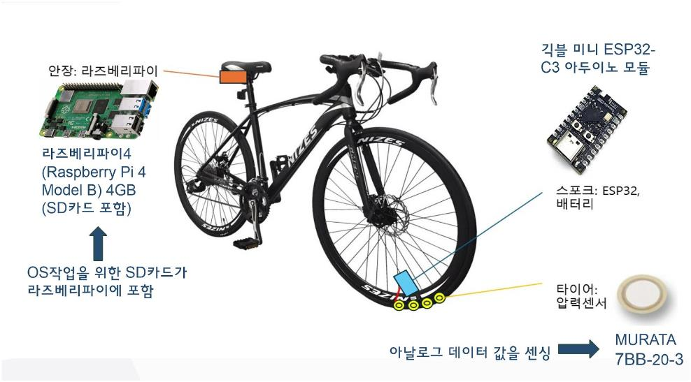
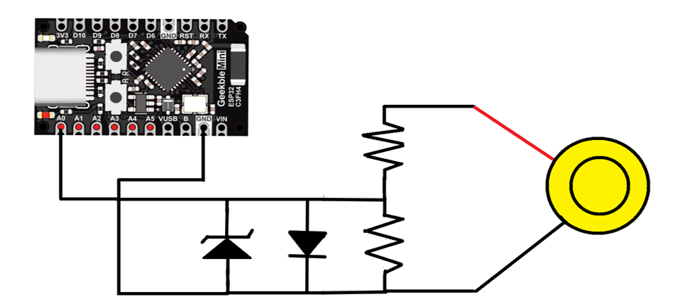
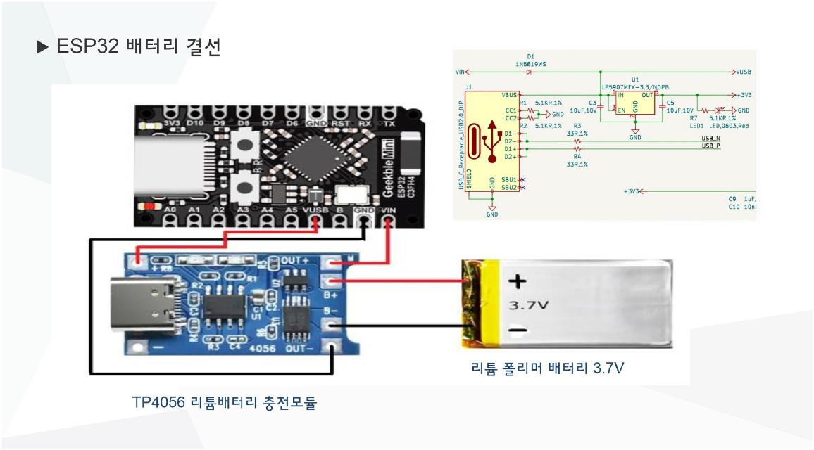
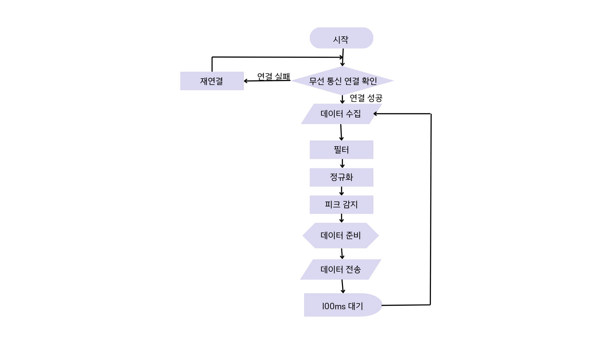
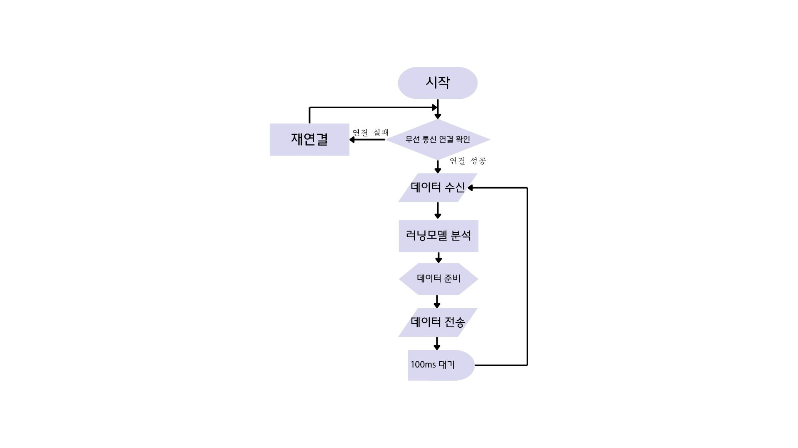
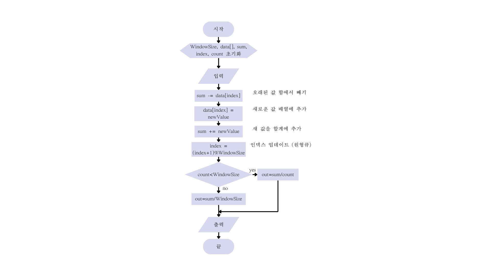
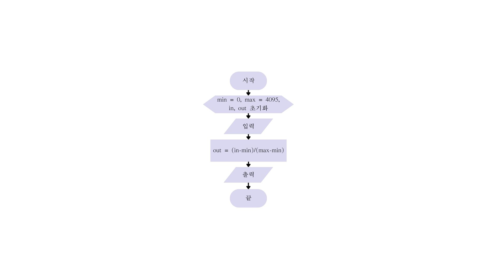
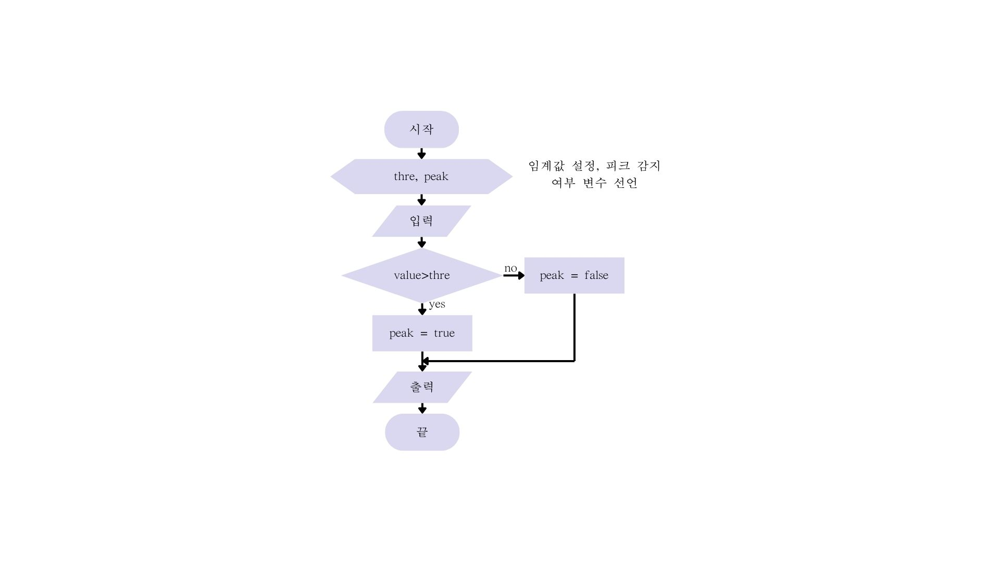

스마트 타이어 프로젝트는 차량 타이어의 상태를 실시간으로 모니터링하여 안전성을 높이기 위해 시작되었습니다. 압전 소자 센서를 활용하여 타이어의 진동과 압력 변화를 감지하고, 이를 기반으로 타이어 상태를 분석하여 스마트폰 앱으로 알림을 제공하는 것이 목적입니다.
제작의 용이성을 위해 자전거 바퀴로 프로토타입을 만듭니다.
압전 센서를 이용하여 실시간으로 데이터를 수집하고, 수집된 데이터를 전처리하여 무선으로 서버에 전송합니다. 이 데이터를 머신러닝을 통해 분석하여 스마트폰 앱으로 알림을 제공하는 시스템입니다. 주요 하드웨어로는 Murata 7BB-20-3 압전 센서, ESP32-C3 Arduino 모듈, Raspberry Pi 4가 사용되었습니다.
이 시스템은 타이어 마모 및 이상 진동을 조기에 감지하여 사고를 예방하고, 사용자가 타이어 상태를 쉽게 모니터링할 수 있도록 지원합니다.

주요 하드웨어 구성:
글루건으로 붙인 부분은 전기가 통하지 않습니다. 글루건의 주요 성분은 전기를 전도하지 않는 물질로 구성되어 있어 절연체 역할을 합니다. 따라서 간단한 전선 고정이나 절연 목적으로 사용할 수 있습니다.
타이어가 끼워지는 림 부분에 압전 센서를 글루건으로 고정하고, 스포크 부분에 ESP32 모듈을 글루건이나 3D프린터 등으로 제작한 케이스로 고정합니다.
안장 아래 부분 등 구르지 않는 부분에 라즈베리파이 보드를 고정합니다.
ESP32는 센서 데이터를 수집하고 전처리를 하여 서버로 데이터를 무선 전송합니다.
ESP32는 6개의 아날로그 12bit 입력을 가집니다. 12bit 데이터이면 우리 프로젝트에 충분한 분해능을 제공하고 4개의 센서를 고려하고 있었기에 6개의 자체 ADC를 가지고 있는 이 아두이노 모델이 프로젝트에 적합하다고 봅니다.
압전센서는 무라타 7BB 시리즈의 20-3 압전센서를 사용합니다.

센서를 테스트한 결과 지속 시간이 짧아 정확하지는 않지만 -4V에서 15V 정도의 전압이 출력되었습니다. 자료를 추가로 찾아보았을 때 해당 시리즈의 압전 센서는 수십 V의 전압을 만든다고 합니다. 20V 크기의 전압을 만든다고 보고 전압 분배 회로를 설계하였습니다.
ESP32는 입력이 3.3V를 초과하는 경우 파손이 발생하고, 0.3V에서 2.8V 사이 전압에서 ADC 동작을 권장하고 있습니다.(이를 벗어난는 범위에서는 오차/포화 문제 발생)
따라서 저항으로 전압 분배를 통해 범위를 입력가능한 전압 영역으로 가져오고 입력 전압을 3.3V로 제한하기 위해 제너 전압이 3.3V인 제너다이오드와 음전압 스파이크로 부터 보호하기 위해 다이오드를 사용합니다.
저항값을 계산하는데 고려한 사항은 다음과 같습니다.
ADC의 입력 임피던스는 수 MΩ으로 너무 높은 저항은 정확도를 떨어트립니다. 따라서 전체 저항이 입력 임피던스의 1/10 이하가 되도록 전체 저항을 100kΩ 이하로 제한합니다. 물론, 너무 작은 저항은 과도한 전류가 흐를 수 있고 전력 소비가 증가할 수 있으므로 충분히 큰 저항 값을 사용합니다.
입력이 3.3V가 초과 하지 않도록 전압 분배를 하여야 합니다.
저항 값 선택: 상단 저항 82kΩ, 하단 저항 15kΩ
이 비율을 적용하면, 센서에서 약 21.3V의 피크 전압이 발생할 때 ADC의 입력은 3.3V가 됩니다.

배터리 충전 결선은 위와 같이 합니다. TP4056 리튬배터리 충전모듈을 사용하며 3.7V, 1000mAh의 리튬 폴리머 배터리를 사용합니다.
ESP32의 VUSB단자와 충전 모듈의 충전 전원 +단지에 연결하여 ESP32에 USB가 연결되었을 때 충전 모듈에 전원이 공급될 수 있도록 합니다. ESP32의 USB포트로 충전과 코드 업데이트를 모두 할 수 있습니다.
위의 결선은 ESP32의 Vin 단자가 VUSB 단자와 전원부에 다이오드를 통해 연결되었기에 가능합니다.
라즈베리파이는 데이터 분석과 앱으로 데이터를 전송하는 역할을 합니다.
라즈베리파이의 전원 공급은 리튬 배터리를 통해서 합니다. 18650 리튬 배터리는 원통형의 배터리로 재충전이 가능합니다. USB단자가 있는 배터리 홀더를 통해 단순하게 전력을 공급 받습니다.
18650 배터리의 용량은 2000mAh에서 3500mAh 사이로 전력 사용을 3W 정도로 계산을 하여도 3시간 이상 사용이 가능합니다.
배터리 홀더는 4구, 네 개의 리튬전지가 들어가는 홀더를 사용해 10,000mAh에 가까운 용량을 계획하고 있습니다.
ESP32는 압전 센서로부터 데이터를 수집하고, 이를 전처리하여 MQTT 프로토콜을 통해 서버로 전송합니다. 서버에서는 머신러닝 모델을 사용하여 타이어 상태를 분석하고, 결과를 사용자에게 시각적으로 제공하는 시스템입니다.
ESP32에서의 전체 알고리즘

라즈베리파이 보드에서의 전체 알고리즘

데이터 수집 주기를 결정하는데 두 가지 고려사항이 있습니다. 하나는 알고리즘에서 데이터를 처리하는 시간보다 길어야 할 것이며, 다른 하나는 자전거의 속도를 고려하였을 때 충분한 데이터를 얻을 수 있어야 할 것입니다.
무선 전송 시간은 전송할 데이터의 크기와 연결된 네트워크의 속도에 따라 달라집니다. ESP32를 이용해 10바이트 정도의 데이터를 전송하는 경우 평균적으로 약 2ms에서 5ms가 소요됩니다.
총 예상 처리 시간: 각 과정에 대한 예상 처리 시간을 합산하면
총 소요 시간: 3ms 이내
데이터 처리의 소요 시간은 수 밀리초 정도로 100ms보다 훨씬 짧습니다.
자전거 속력을 20km/h로 가정하면(한 바퀴에 얻을 수 있는 데이터가 적은 경우를 가정하기 위해 다소 빠른 속력을 가정)
20 km/h = 20,000m ÷ 3,600s ≈ 5.56m/s
타이어 반지름 r = 0.35m
타이어의 둘래는 2πr ≈ 2.2m
타이어 회전수 f = 5.56m/s ÷ 2.2m ≈ 2.53Hz
타이어 회전 주기 T ≈ 1 ÷ 2.53Hz ≈ 0.395s
100ms마다 데이터를 수집할 경우, 타이어가 한 바퀴 도는 395ms 동안 약 4회의 데이터를 수집할 수 있습니다. 한 바퀴 회전 시 여러 지점에서 데이터를 측정 가능하며, 자전거 속도 변화나 타이어 진동 패턴을 잘 반영할 수 있습니다.
수집된 데이터는 노이즈 제거와 정규화 과정 등의 전처리 과정을 거칩니다.
고려한 전처리 과정은 노이즈 제거와 정규화 피크 감지, 이상값 제거 등이 있었습니다. 노이즈 제거와 정규화는 머신러닝 과정에서 학습 효율과 분석 효율성 측면에서 필수라고 보았고, 피크 감지는 머신 러닝 모델이 충분히 판단할 수 있는 부분이지만 마찬가지로 학습과 분석 효율에 도움이 되리라 보았습니다. 이상값 제거 또한 한다면 더 효율적인 학습과 분석을 할 수 있으리라 생각하였지만 필요한 데이터 또한 제거될 수 있을 것 같다는 점과 너무 많은 전처리 과정을 가지는 것은 처리 시간 관점에서 좋지 않다고 판단하여 아래 세 가지 전처리 과정만 가집니다. 후에 계산해 본 결과 소요 시간에는 여유가 있음을 확인하였습니다.
필터: 이동 평균 필터와 저역 통과 필터를 고려하였으며 구현이 쉬운 이동 평균 필터로 노이즈 제거를 합니다.

윈도우 크기 결정 과정
따라서 한 회전 내에 충분히 충분히 많은 데이터를 포함하면서, 주행 속도의 변화와 노면의 진동 패턴을 유지할 수 있는 윈도우 사이즈, N = 6 정도가 적절합니다.
정규화: 최소 0에서 최대 1로 정규화합니다. 추후 값들이 평균적으로 너무 작거나 크다면 최댓값을 1로 하는 대신 평균을 1로 하거나 또는 0을 평균으로 하여 편차를 1로 설정합니다.

피크 감지: 특정 값을 초과하는 경우를 피크로 판단하고 피크가 발생한 것을 하나의 이벤트로 데이터에 추가합니다. 평균 또는 편차를 1로 설정하는 경우 2를 초과하는 경우 등이 피크가 될 수 있습니다.

데이터를 서버로 전송합니다. JSON으로 파일을 만들어 전송하는 방법을 사용할 계획입니다.
서버에서 머신러닝 모델을 통해 타이어 상태를 분석합니다.
라즈베리파이4 ModelB에서 TensorFlow모델을 올리면 무거워서 실시간 분석이 어려울 수 있을 것이라 판단하여 TensorFlow lite 모델을 올립니다.
분석 시간과 관련한 자료를 계속해서 찾고 있습니다. 100ms이면 여유가 있을 것이라 생각하나 만약 분석 시간이 더 소요된다면 200ms 까지는 속력 관점에서 아직 충분한 데이터를 얻을 수 있다고 보고 있고 이동 평균 필터의 윈도우 사이즈를 그에 맞게 줄일 필요가 있습니다.
Flutter를 사용하여 앱을 개발합니다.
전체 프로젝트는 다음과 같은 단계로 진행합니다: